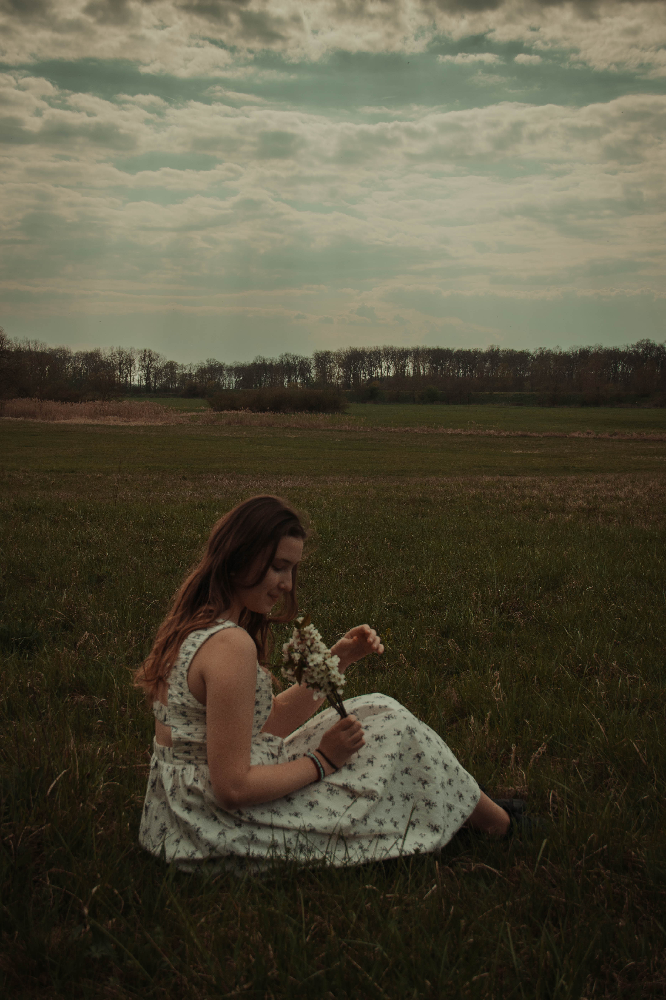
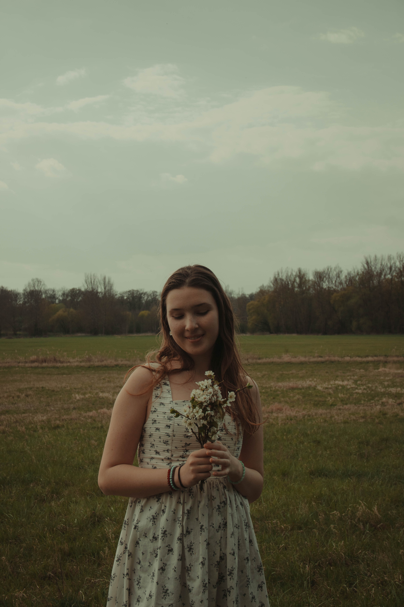
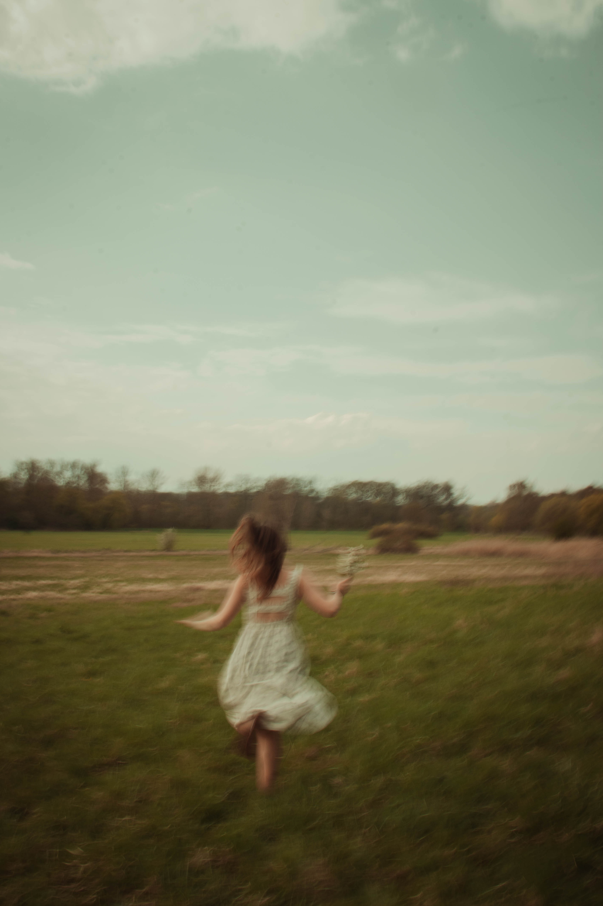

Pop · indie pop · christian pop
Zpěvačka a autorka písní z Prahy. Píšu o víře, o pochybnostech a o tom, co se běžně neříká nahlas.
01 — O mně
Nejvíc se do mé hudby prolíná moje víra a tu chci svou muzikou šířit dál. Chci inspirovat hlavně mladé lidi v ateistickém prostředí, aby se nebáli mluvit o tom, co je pro ně důležité a v Koho věří.
Píšu songy, hraju a zpívám.
Největší inspirace: Gracie Abrams · Zoe Levert · Grace Runkle


„Nebát se mluvit o tom, v Koho věřím.“
03 — Zkušenosti
Hlas Česka
Postup až do semifinále první velká zkušenost s jevištěm a s kamerou.
Trhy & akce
Pravidelná živá vystoupení s klavírem a kytarou, vlastní i převzatý repertoár.
Busking v Praze
Hraní na ulici nejrychlejší škola toho, jak si získat pozornost kolemjdoucích.
04 — Plány
Ráda bych navázala spolupráci s dalšími umělci i producenty, se kterými by vznikl nový song. Pokud tě moje muzika zaujala, ozvi se.